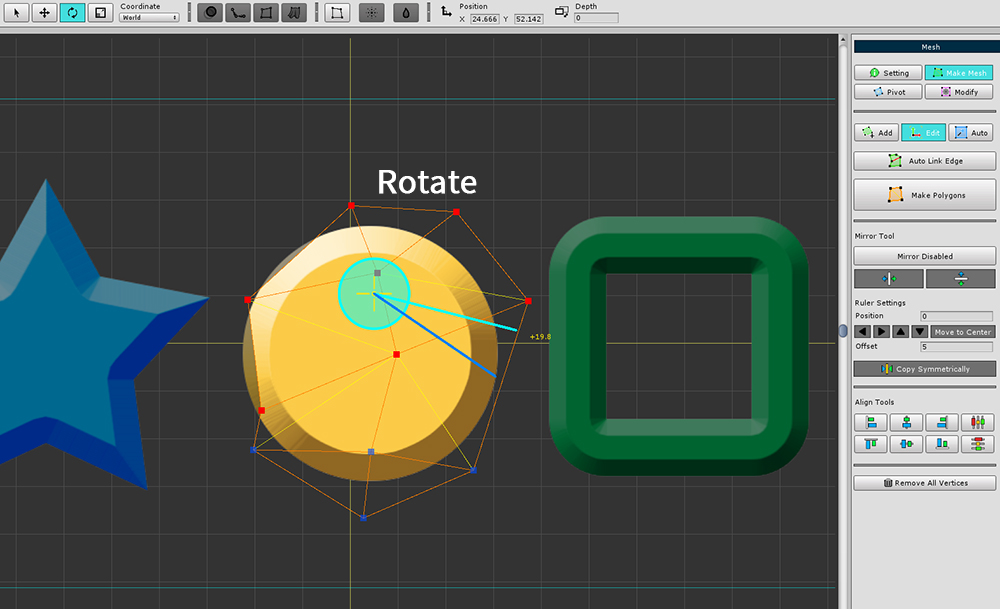
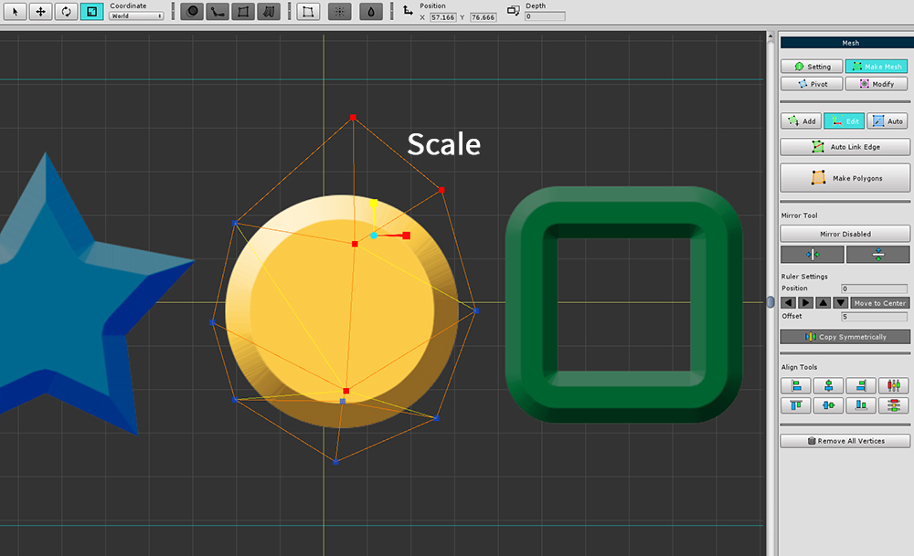
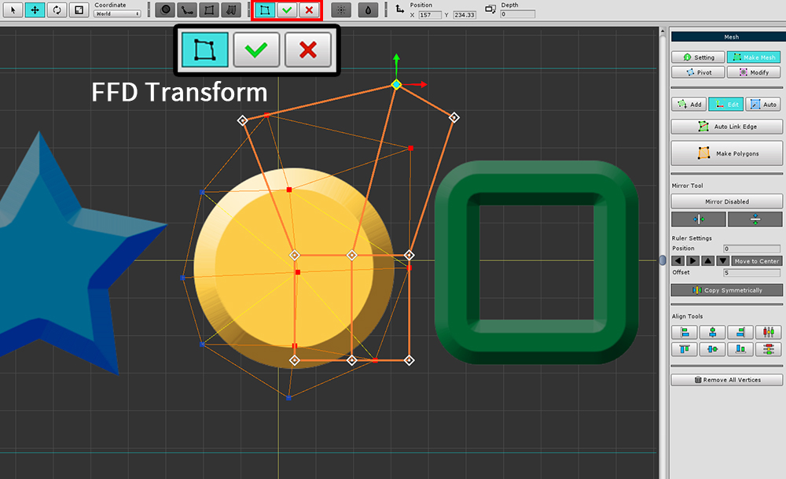

AnyPortrait > 메뉴얼 > 메시 편집하기
메시 편집하기
1.1.0
메시를 제작하는 기존의 도구는 버텍스를 1개씩 선택하여 수정하거나 추가하고 제거하는 방식입니다.
메시의 버텍스들을 수정하고자 할 때, 이러한 방식은 다소 귀찮을 수 있습니다.
이 페이지에서는 여러 버텍스를 선택하여 편집하는 방법을 서술합니다.

(1) 메시를 선택합니다.
(2) Make Mesh 탭을 선택합니다.
(3) Edit 탭을 선택합니다.
Edit 탭을 선택한 상태에서 버텍스를 선택하고 편집할 수 있습니다.
하단의 UI는 메시를 생성하는 툴과 동일하며, 미러 툴이 포함됩니다.
미러 툴에 대해서는 관련 페이지를 참고해주세요.

이동 툴(단축키 W )을 선택하여 버텍스들을 이동시킬 수 있습니다.

회전 툴(단축키 E )을 선택하여 버텍스들을 회전시킬 수 있습니다.

크기 변경 툴(단축키 R )을 선택하여 버텍스들의 크기를 변경할 수 있습니다.
FFD 툴 이용하기

화면 상단의 FFD 툴을 사용할 수 있습니다.
버텍스들을 선택하고 FFD 툴을 켠 상태로 형태를 변형한 뒤, 적용 버튼 이나 취소 버튼을 누르면 됩니다.
버텍스 정렬하기

정렬 도구들이 추가되었습니다.
(1) 버텍스들의 위치를 일치시킵니다.
(2) 버텍스들의 간격을 일정하게 만들어 재배치합니다.

(1) "X 좌표 가운데 정렬" 버튼을 누르면,
(2) 버텍스들의 X 좌표가 동일하게 바뀝니다.


(1) 버텍스들을 선택하고 (2) "Y 좌표를 고르게 배치하기" 버튼을 누릅니다.
버텍스들의 간격이 일정하게 재배치된 것을 확인할 수 있습니다.